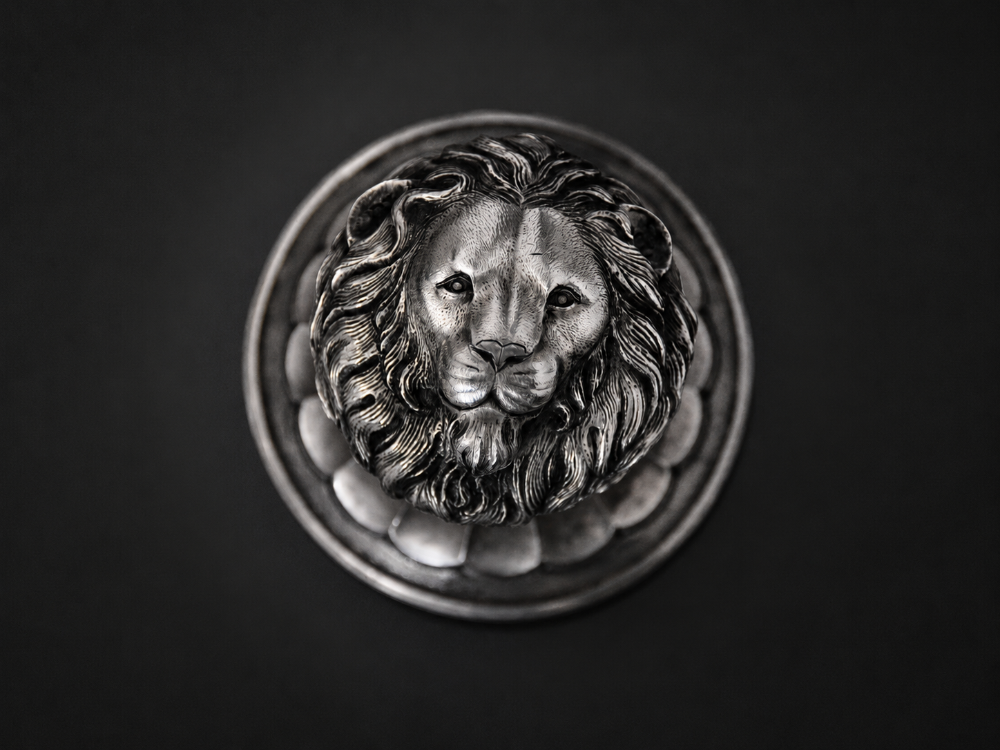
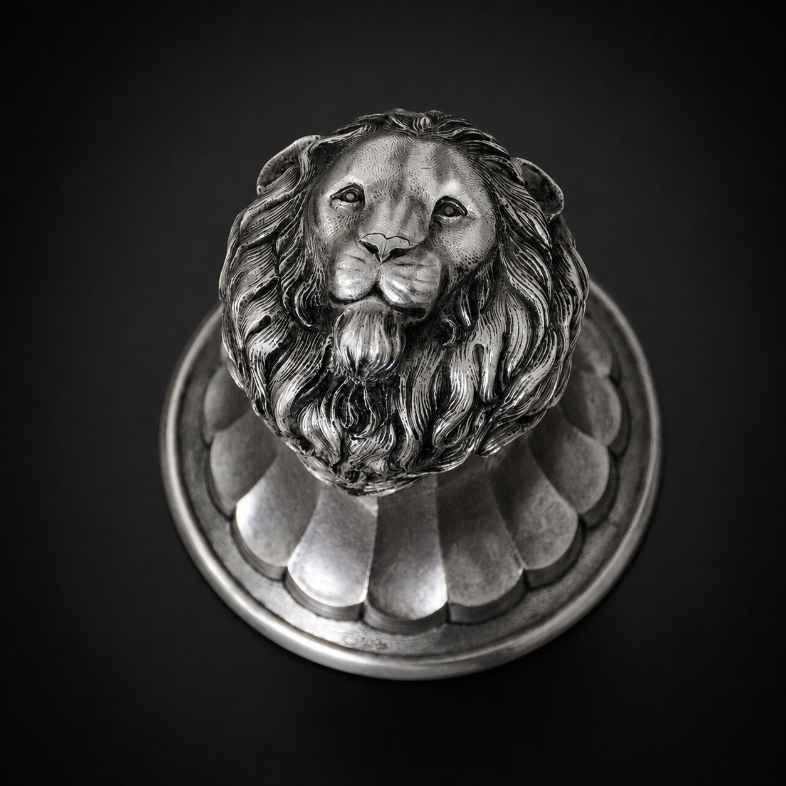

Lion-Head Rhyton
A contemporary Persian silver takuk/rhyton work by Hadi Hafezi, shaped in Isfahan as a lion-head animal-vessel body of guardianship, dignity, power and ceremonial presence.
Contemporary artwork. Not an antiquity. Not an archaeological object. Not a historical replica.

Guardianship, dignity and frontal power
Lion-Head Rhyton brings the figure of the lion into the Padyar Takuk language as a compact body of watchfulness, authority and royal presence.
The lion is not a surface ornament placed on a vessel. Its face, mane, fluted lower body and silver structure must be read together as one animal-vessel body.
The frontal head gives the work a direct encounter with the viewer. It carries dignity and guarded force without turning the work into a historical object, museum copy or decorative cup.
In this work, silver is not treated as ordinary silverware. It becomes the material ground for a contemporary Persian takuk/rhyton artwork shaped through restraint, pressure and material discipline.
The lion creates a frontal, guardian-like presence of dignity and controlled strength.
The silver surface gives the work a calm, ceremonial and museum-like presence without reducing it to silverware.
The face, mane and fluted lower form are read as one continuous contemporary animal-vessel body.
Frontal presence and upper-view detail
These views show the lion head as a direct frontal presence and as a sculptural form seen from above. The polished silver, dark recesses and fluted body clarify the work as a compact animal-vessel body rather than a surface-decorated object.
Lion-Head Rhyton — main artwork view.

Lion-Head Rhyton — frontal detail, showing the lion face and guarded presence.

Lion-Head Rhyton — upper-view detail, showing mane, fluted body and silver structure.
Seamless silver presence
The technical force of this work lies in the seamless one-piece body: a silver animal-vessel form shaped without welding.
Its value is not only in material or surface brightness. The central value is the controlled transformation of metal into a continuous body where lion, vessel, ritual memory and sculptural presence become one.
Lion-Head Rhyton / ریتون سر شیر
Silver
1403
Seamless one-piece body, without welding
Contemporary Persian takuk/rhyton metalwork
Weight and sensitive technical details are reserved for internal or professional review.
A lion as threshold and guardian
The lion can be read as a sign of guardianship, dignity and controlled power. In this work, that meaning is not announced through excess ornament; it is held in the frontal gaze, compact form and disciplined silver surface.
The ceremonial memory of animal-vessel forms is present, but the work remains newly created and contemporary. It is not presented as an ancient object, archaeological artifact, historical replica or museum reconstruction.
Lion-Head Rhyton is a guarded silver body: a contemporary animal-vessel form shaped by dignity, restraint and material discipline.
ریتون سر شیر
ریتون سر شیر اثری نقرهای از پادیار تکوک است که پیکره شیر را به بدنی جانور-ظرف تبدیل میکند؛ بدنی از شکوه، نگهبانی، قدرت مهارشده و حضور آیینی.
در این اثر، شیر نقش تزئینی نیست. چهره، یال، بدنه پرهدار و ساختار نقرهای اثر با هم خوانده میشوند و ظرف را به پیکرهای روبهرو، نگهبان و باوقار تبدیل میکنند.
ارزش این اثر فقط در نقره یا درخشش سطح آن نیست؛ ارزش اصلی در تبدیل کنترلشده فلز به بدنی یکپارچه و معاصر است. شیر به ظرف اضافه نشده است؛ شیر هویت، نیرو و حضور خودِ ظرف شده است.
این اثر عتیقه، شیء باستانشناسی، کپی تاریخی یا بازسازی موزهای نیست. همچنین ظرف مصرفی روزمره، نقرهجات معمولی، شیء خانهآرایی یا جام دکوری نیست؛ بلکه اثری معاصر در ادامه زبان تکوک/ریتون ایرانی است.
Authenticity and review context
Padyar Takuk works are presented through contemporary-art language and careful documentation. For serious professional or curatorial review, selected records may include artwork identity, authorship context, image-use records, technical notes and process evidence where documented.
The essential clarification remains constant: Lion-Head Rhyton is a newly created contemporary artwork by Hadi Hafezi in Isfahan. It is not an antiquity, archaeological object, museum copy, historical replica, tableware, ordinary silverware, homeware or decorative vessel.